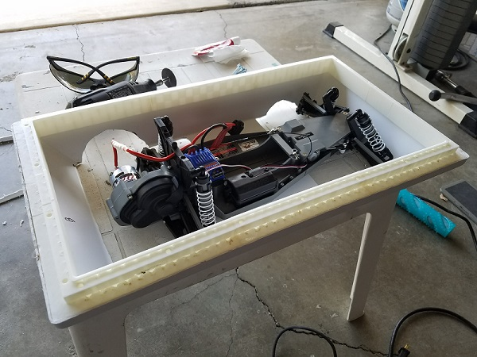
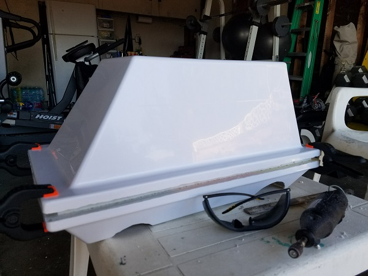
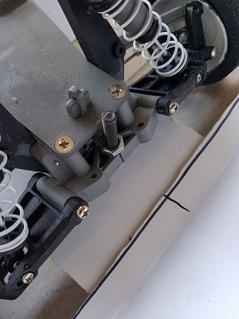
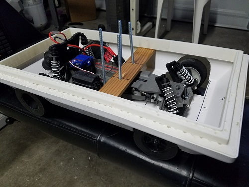
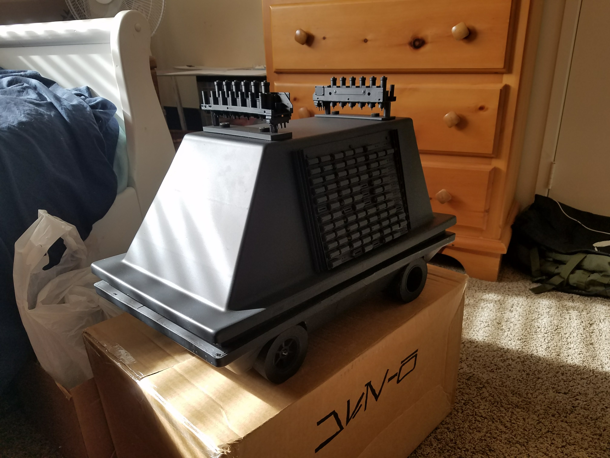

Hi all! Here’s the build log for my MSE-6 Repair Droid. Better known as a Mouse Droid. The thing that really possessed me to build this up was seeing the wonderful scale R2-D2 builds by plenty of the members over at astromech.net really great work seen over there. That with a mix of having a hobby in electronics design and being a mild Star Wars fan, I figured a smaller scale droid would be suitable for a first build.

Also, I wouldn’t have been able to get this done without all of the help from build logs featured on mousedroidbuilders.club, thank you to everyone who posts there. Now onto my build.
My build started out with me getting a Traxxis Bandit RC Car at a discounted price on eBay. The Bandit was the RC typically used around the club for those who were trying to build the droid on the cheap. The Bandit came with its own battery and transmitter making it convenient for anyone who is not already involved in RC vehicles. The stock outer shell and spoiler were removed and discarded, as they would not be used in any part of the build. The stock Bandit ran off a Nickel Cadmium (NiCad) battery, which I found unimpressive. A Lithium Battery will most likely replace this in the future.
Now that I had a chassis to work with, I knew that I wanted something relatively lightweight. As the Bandit chassis and motor wouldn’t be able to carry anything too extreme. I had seen many R2 units that were machined from Aluminum and Mouse Droid frames made from milled 2x4s; materials that were going to be too heavy for the RC chassis that was picked out. I also had a 3D printer at my disposal, thanks to the local library, so I knew that 3D printed parts would be an option also thanks to TinyP’s post with .stl files of mouse droid parts.

These circumstances led me to the decision to make the frame out of ABS printed with ~60% infill (This was overkill). Also (special thanks to the club for this) a plastics manufacturing company called Granite Earth has an ABS mold that, with a few cuts, looks just like the form of a Mouse Droid. Using ABS would also allow it to be supported by the frame and chassis.
Next order of business was the side IC panels. Already being an electronics hobbyist, this was able to be done with no additional costs. Looking at a picture for reference, I lined up about 120+ IC chips to form the side panels. For the record, the IC chip I used were NAND 7404 (they will be remembered for their sacrifice).With all of the parts either, printed, arrived or on-standby, it was time to put it all together!I started by placing the frame, now assembled together, inside of the uncut shell. The frame was glued into place and dried overnight.With the frame down, it was time to cut the ridge of the shell to shape. Using a rotary tool, I carved around both sides of the shell until it was level with the in-place frame.Next was to place the chassis, the chassis fit rather nicely in the bottom shell and once it was in place I marked the places where the tires would stick out and cut the holes. Again, these were cut with the rotary tool.

The droid was starting to come together and now that I had the bottom attached to the chassis I went to see how it ran. There was a problem, the chassis was not supporting the weight of the ABS and the bottom sagged to the point where the bottom frame was dragging along. I found the cause of this to be the suspension on the chassis supporting the tires. The suspension’s shocks were weighed down and lower the vehicle. To rectify this inserted some 3/8” PEX tubing into the shocks to stiffen them out and not move at all. This worked! Kind of.
The chassis was still sagging and when you added the top shell, the weight was still too much for the chassis to support it. Also, the vehicle could not go over simple cracks in the sidewalk without getting stich from the front end of the bottom. What I needed to do was raise the front of the bottom shell to the chassis and bring more support to the center bolts that were initially used to attach the bottom shell to the chassis. This was accomplished by adding another bolt to the frontmost part of the chassis and adding a support beam across the two front center bolts. These support solutions rectified the problem and gave me clearance to finish work on the top shell.

The top shell didn’t need much. I added a 3” hole on both sides where I plan to place speakers so that the droid can have a voice and threw the side panels and top greebles on. After giving everything a coat of black spray paint, it was looking presentable.There is more to go on this project. It is essentially the frame for a robot, so upgrades are always something I can do. More to come eventually!

Here's the Bill Of Materials for this project
| BOM Item # | Item Name | Quantity | Price/Unit | Total Cost |
|---|---|---|---|---|
| 1 | Granite Earth Shell | 1 | $60.00 | |
| 2 | ABS Filament Roll | 1 | $20.00 | |
| 3 | Traxxas Bandit | 1 | $40.00 | |
| 4 | IC Chips | 120 | Free (Recovered) | |
| 5 | Side Panels | 2 | Free (Recovered) | |
| 6 | 3" Speakers | 2 | $1.50 | |
| 7 | 3/8" PEX Tubing | < 1' | $1.00 | |
| $124.00 |